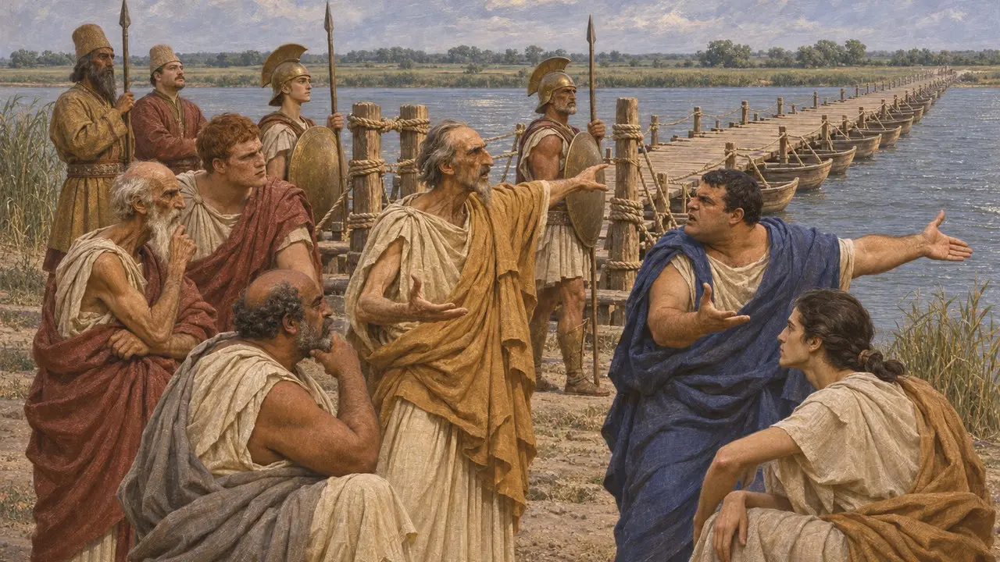
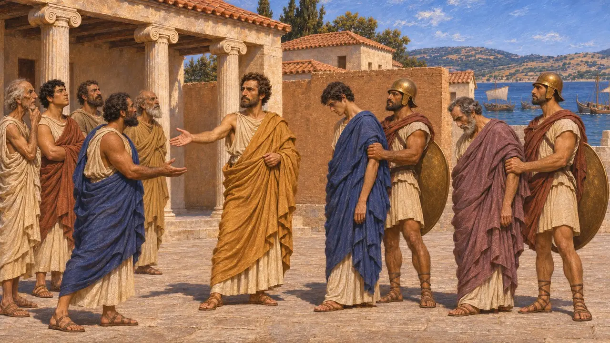
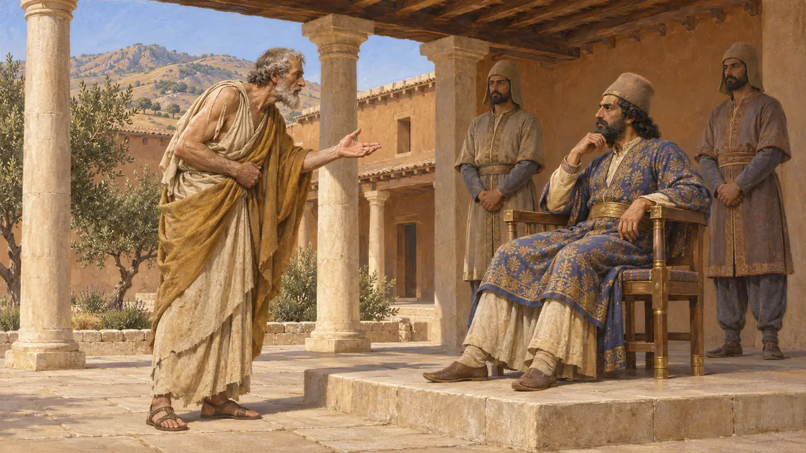
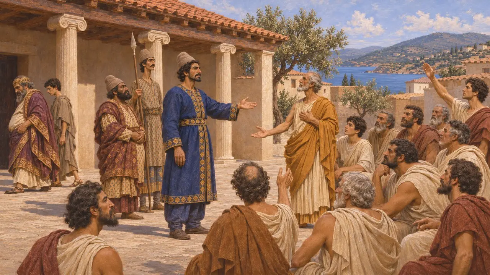
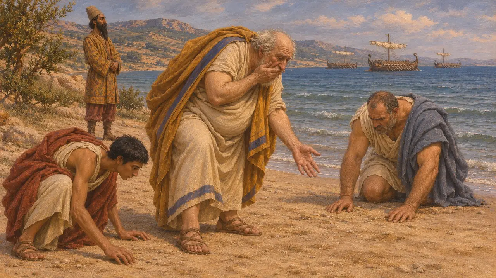

ギリシア諸都市の僭主
王のためにイオニアとヘレスポントス地方の諸都市を治めたギリシア人支配者たち（紀元前545年頃〜479年）
キュロスがリュディアを征服し、その将軍たちがギリシア沿岸を平定した後、ペルシア人は多くのギリシア都市を「テュランノス」と呼ばれる単独の現地支配者を通じて統治した。この語は慣習的な国制の外にある支配者を指すもので、必ずしも残虐な者を意味しない。彼らはサルディスとダスキュレイオンにいる王のサトラップに従い、王の遠征に従軍し、その地位をペルシアの後ろ盾に負っていた。その忠誠は紀元前499年のイオニアの反乱で崩れ去った。
ゲームでは： 本作ではヒスティアイオス、アリスタゴラス、ヒッピアスを王に仕えるギリシア人の支配者としている。前の二人は確かにダレイオスのためにミレトスを治めたが、ヒッピアスは紀元前510年にアテナイを追われており、復帰を望む亡命者としてペルシアに仕えていた。

ペルシアの力に支えられた支配者たち
古代の記述ヘロドトスによれば、紀元前513年頃のダレイオスのスキタイ遠征の際、イオニアとヘレスポントスの諸都市の僭主たちがイストロスに架かる橋を守っていた。ミルティアデスが橋を落として王を置き去りにするよう促すと、ミレトスのヒスティアイオスは、自分たちが支配者でいられるのはひとえにダレイオスのおかげであり、彼がいなければ諸都市は民衆による統治を選ぶだろうと答えた。ヘロドトスはこれらの支配者の名を列挙しており、その中にはキオスのストラッティスやサモスのアイアケスがいる。
Herodotus 4.137-138

ミレトスのヒスティアイオスとアリスタゴラス
古代の記述ヘロドトスによれば、ダレイオスはヒスティアイオスにトラキアのミュルキノスの土地を与えて報いたが、メガバゾスがその野心を警告したため、彼をスーサの宮廷に留め置いた。ミレトスは代わって娘婿のアリスタゴラスが治めた。ペルシア軍とともにナクソスを攻めて失敗した後、アリスタゴラスは紀元前499年頃に王に背き、自らの僭主の地位を放棄して、他の都市の僭主たちを捕らえさせ、その市民に引き渡した。
Herodotus 5.11; 5.23-25; 5.30-38

ヒッピアス――王の宮廷に身を寄せた亡命者
古代の記述ヒッピアスは紀元前510年までアテナイを支配したが、スパルタの助けを得た勢力に追放され、一族が押さえていたトロアスの町シゲイオンへ退いた。ヘロドトスによれば、彼はのちにサルディスのアルタフレネスのもとへ赴き、自らの復位をペルシア人に働きかけた。トゥキュディデスは、彼がダレイオスのもとへ上り、老齢の身で紀元前490年にペルシア軍とともに出航したと付け加えている。ヘロドトスは、彼がペルシア軍をマラトンへ導いたと記す。
Herodotus 5.65; 5.94-96; 6.102; Thucydides 6.59

マルドニオスは僭主政を終わらせたのか
係争中ヘロドトスによれば、紀元前492年にマルドニオスはイオニアの僭主たちを廃し、民主政を敷いた。ペルシア人の間で民主政が論じられたという話を疑うギリシア人はこれに驚くだろうと彼は考えていた。しかしペルシアの後ろ盾を得た僭主は後の巻にも再び現れる。ストラッティスは紀元前479年にもなおキオスを治めており、サラミスの後にはペルシア人がテオメストルをサモスの支配者に据えた。この変革がどこまで及んだのか、またペルシアは貢納と秩序を保つ地元の体制なら何であれ支持しただけなのか、歴史家の間で議論が続いている。
Herodotus 6.43; 8.85; 8.132; P. Briant, From Cyrus to Alexander, 2002

密書と前兆
後世の伝説ヘロドトスによれば、スーサに留め置かれたヒスティアイオスは奴隷の頭を剃り、頭皮に反乱を促す文言を刺青し、髪が伸びるのを待ってアリスタゴラスのもとへ送った。またヒッピアスはマラトンに上陸した際、くしゃみをして抜けかけた歯を砂の中に失い、これをアテナイを二度と取り戻せぬ徴と受け取ったという。どちらの話も教訓譚の形をとっている。
Herodotus 5.35; 6.107
出典
- Herodotus 4.137-138; 5.11-38; 5.65; 5.94-96; 6.42-43; 8.85; 8.132
- Thucydides 6.59
- P. Briant, From Cyrus to Alexander, 2002
- A. Andrewes, The Greek Tyrants, 1956